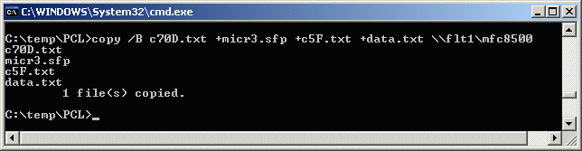

|
IDAutomation.com, Inc. |
|
Your Source for Quality Symbology |
This document describes how to print PCL (HP's Printer Command Language) fonts to PCL compatible printer. PCL fonts can be used on any operating system that can send files to a PCL compatible printer in binary mode. In MS DOS this is performed by using the COPY command with the /B switch.
The syntax for naming the PCL fonts is as follows: Symbology + height + point size + .SFP". Fonts with the text below start with H in the font name. All of these PCL fonts are 300 DPI.
NOTE: The example provided below is only one method of printing with PCL fonts. We provide this example for you to test the PCL fonts and ensure they are compatible with your printer. Your application will need to perform similar commands to copy the escape sequences and fonts to the printer as a single chunk of data. We do not perform consulting services to help you with the implementation in your application because it is beyond the scope of our support policy.
In the example below, the Esc represents the escape character for your software. In DOS Edit, Esc is represented by holding down the CTRL key and pressing the letter P, Releasing both keys and then press the ESC key.
To download a font to your printer and assign it an ID number of 70 you would send the following commands to the printer:
We have created test files for you to perform PCL font tests from MS DOS or a Windows command prompt. To perform the commands listed below, simply run the TEST.BAT file provided in the ZIP file with our PCL fonts. The TEST.BAT file assumes you have a PCL printer attached to the LPT1 port of a PC. View the files c70D.txt, c5F.txt and data.txt with a standard text editor to view the commands in the files.
You may type the copy commands manually from the prompt to select a different font, for example:
copy /B c70D.txt +NewFont +c5F.txt +data.txt LPT1
The files may also be copied to a printer on a network, for example:
copy /B c70D.txt +NewFont +c5F.txt +data.txt \\flt1\mfc8500
This is an example of what we typed at the command line to send the micr3.sfp
font to a network printer:

More Information:
PCL defines a standard set of commands enabling programs to communicate with PCL or PCL compatible printers. If you need further information about PCL commands, you may want to obtain the Technical Reference Manual set, part number 5021-0377. Order the manual set from HP's Support Materials Organization.
Copyright © 1999-2005 IDAutomation.com, Inc. All rights reserved. All trademarks mentioned are the property of their respective owners.